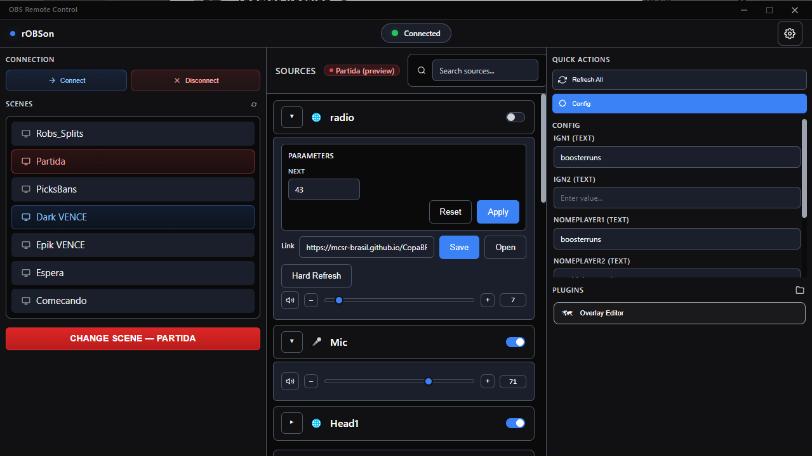

Dashboard
The dashboard is the main window. Scenes on the left, sources in the center, plugin buttons and config on the right sidebar.

Source Naming
Only sources whose name starts with _ show up in the dashboard. Everything else is ignored.
This way you can mark only the sources that will be changing during the stream, and keep other sources hidden from the dashboard.
The underscore is stripped from the display name, so _Camera 1 shows as Camera 1.
CONFIG scene
A scene called CONFIG can be used to store configuration sources that are used for plugins or in the overlay several times.
The config scene wont show up in the scene list. but all its sources will be available in the right sidebar, under the config button.
This is mostly used to store text that is used in multiple places, and constantly changing, such as a name or a count, or also store Plugin configuration, such IDs or URLs for fetching data.
Scenes
Clicking a scene loads its sources into the dashboard. but in preview mode, like in Studio Mode on normal OBS, allows you to change sources data before making the transition.
If you have studio mode enabled, this preview scene in Robs will show up as the preview scene in OBS, if not, you just wont have that visual.
To make the scene change go live, you can click the red button, or press CTRL + Enter to transition. You can also double click the scene in the selector to do a direct transition.
Source Controls
Each source row has a toggle switch on the right to show or hide the source in OBS. Click anywhere else on the row to open the source options panel.
What appears in the options panel depends on the source type, URL, Volume sliders, etc.
Keyboard Shortcuts
There is a page in the Settings tab that shows all available keyboard shortcuts.
Here are some of the ones for Sources:
- Enter / Space — toggle the options panel open or closed.
- E — open options and jump focus into the first control.
- V — toggle source visibility.
- ↑ / ↓ — move between sources.
- Escape — close the options panel.
- Ctrl+Enter — transition the preview scene to program (global).